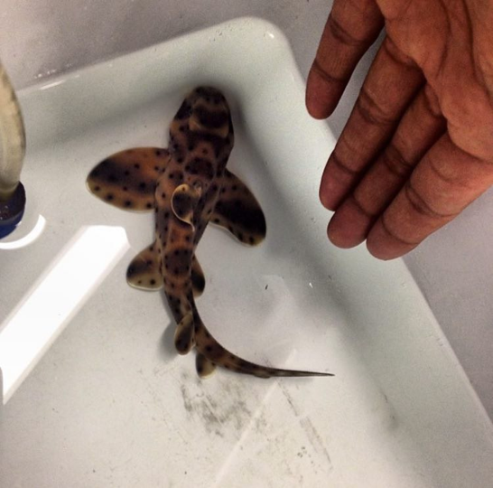
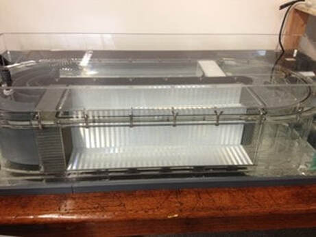
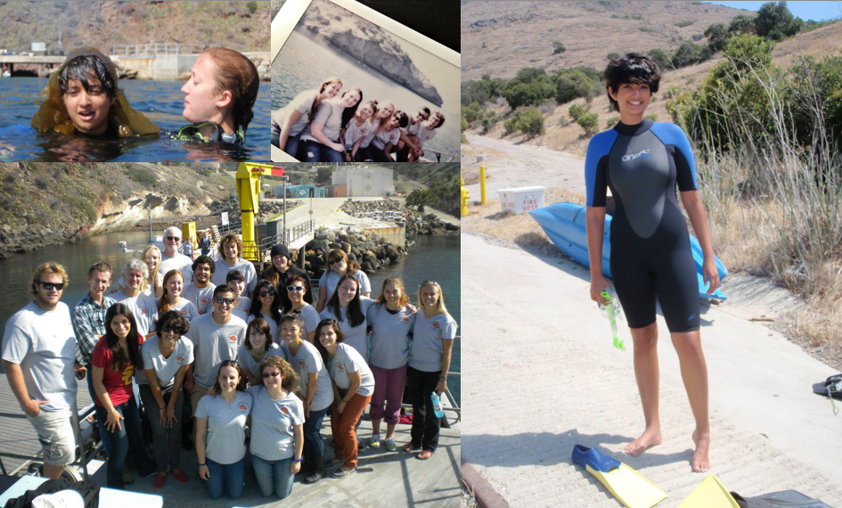
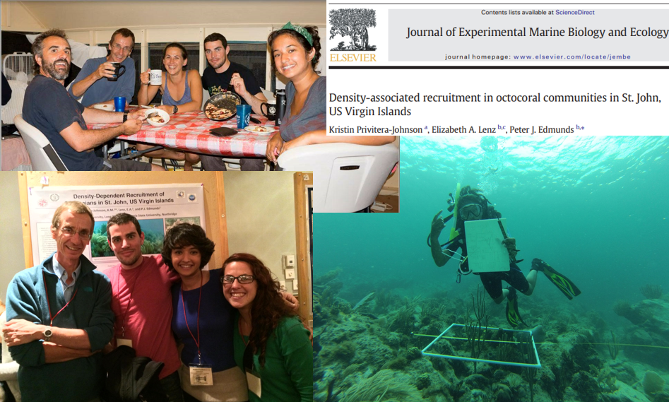
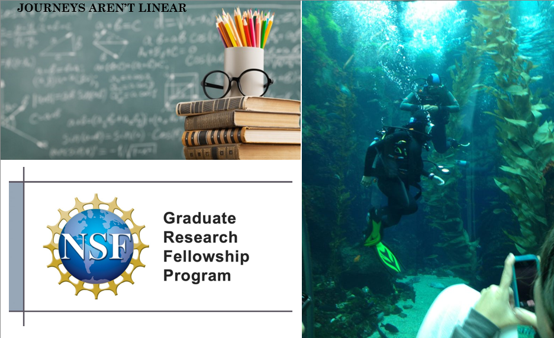

TLDR;
- Fish life history brought me to marine biology
- I discovered that what humans know (or don’t know!) about fish life history can have a huge impact on communities who rely upon fish
- My first hands-on experience with population dynamics was counting coral in St. John, USVI
- I took a gap year(s) between my B.S. and M.S. and learned that teaching is one of my callings
- I wasn’t done with marine science and an NSF fellowship opened the door to fisheries science and stock assessment at UW SAFS
Long version
Watch Video: adapted from a 2022 seminar I gave for undergraduate marine biology majors at UW

My academic relationship with marine biology started at California State University, Long Beach. At the time, one of my favorite things about studying marine biology was fish physiology. I volunteered as an undergrad researcher for a project that basically required me to put baby horn sharks into a flume respirometer (AKA a fish treadmill) and watch them breathe. The goal was to learn more about this sedentary shark’s metabolism. At this time, I was pretty sure I wanted to focus on comparative animal physiology—the way marine life exhibits the adage “form follows function” is really amazing. Fish life history is the best!

But all of this started to change when I learned about the history of the orange roughy stocks. The world just loved to eat these guys. They are a deep water fish and every year when the trawl nets came up, they were teeming with orange roughy. Until they weren’t. The stark contrast between high catches to suddenly missing was alarming, to say the least. Folks then decided to ask some questions about the life history of orange roughy. We know they live deep…but we don’t know much about their reproduction or even how long they live. Maybe 30 years tops. So they looked into it. It turns out these fish actually live to be 125 – 156 years old. And they can take 20-40 years to become sexually mature adults. What?! Basically, they were harvesting fish faster than the fish could grow and make more orange roughy. I was honestly hooked. I was very curious—how do science and management connect? How can scenarios like this be prevented? I asked someone this and they told me “they use models”. I had no idea what those are.
Orange roughy and the mysterious models took a backseat while I spent a semester living and studying on Catalina Island at the USC Wrigley research station. We took classes like Ichthyology, Phycology, and Invertebrate Zoology while doing mini-research projects. It was during Invert Zoo when I first realized that I was capable of going to graduate school. I didn’t know before this moment because back home I worked to support my family and the cost of school. I really struggled to balance those responsibilities with my school work. (Much less the extracurricular work required to build your research CV.) Being financially supported through scholarships helped me get out to Catalina and try marine biology for real. For any administrative folks or folks of influence who may read this page, please continue your work to lower the barrier to entry for cool immersion programs like these!

It turns out I performed really well in that Invert Zoo class. The class was taught by Dr. Pete Edmunds from CSU Northridge, someone I would not normally rub elbows with back at CSULB. One day I talked with Pete (not going to lie, I cried) about my frustration with balancing schoolwork, research experience, and work. He asked me if I wanted to write a grant proposal to the National Science Foundation to try and win some money to send me out as a Research Experience for Undergraduates Intern out at their Long Term Research site in St. John, USVI. We won the grant! It paid for me to become certified as a scientific diver! The research question was essentially: “Do soft corals (octocorals) with their tree like branches block the settlement of new coral underneath those branches?”. Coincidentally, this question overlaps with questions about population dynamics (how do populations change/grow?). This pushed me even closer to literature and questions that overlap with the story of orange roughy and the relationship between science and management.

At this point, I think it is really important to mention what happened after I graduated with my BS in Marine Biology. While getting ready to graduate, I talked with someone about joining their Masters program but unfortunately, the funding fell through and I didn’t get into grad school. I was sad and disappointed, but this was a blessing in disguise. I took a few months off. I applied for all sorts of jobs: marine biology jobs with city governments or state governments. Pizza places. One day I found a job ad on a website that said a private school was hiring someone to teach biology. I had done some peer teaching at CSULB for many years as one of my jobs, so I had the interest and experience, though I did not have a teaching credential. I applied for the job. I was invited for an interview! And then I got a second interview! And then I got the job! I moved to San Francisco and taught AP Biology, freshman physics, junior/senior physics, and sophomore chemistry for 2 academic school years. I coached the JV lacrosse team. I was a volunteer diver at an aquarium. It was amazing. I learned about what I value about working and living in a community and I learned how to become a better teacher. I learned that teaching provides me with energy to keep going when the going gets tough.

But working at the private school wasn’t quite right for me. I was 23 and not quite ready to stop doing work on marine systems. So I cold emailed this guy named Dr. Andre Punt about grad school. Everyone was telling me that he was the guy to talk to about learning how to use “models” to bridge science and management questions. Someone else told me that if I applied to the NSF GRFP and won 3 years of funding, I could go to any grad school I wanted. I felt like there was no way I could make it. I’m not that special, my grades aren’t great, and I don’t have enough math background to catch UW’s attention. Good thing I was wrong again. Because I won. And Andre said, c’mon over let’s do a Masters!